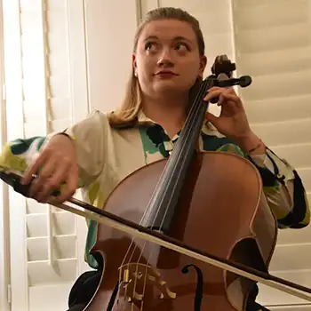

Portfolio

Who is Salomé Passeraub?
I started playing the Cello when I was five. At first I wanted to play the violin, but my mom thought it was better for me to play the cello. So this is what I did. After 18 years of playing, including a two year break, I finally started my journey as a Cello performance student at UVU.
About orchestras
The first orchestra I was a part of was the ouroboros ensemble in Fribourg, Switzerland. The goal of this orchestra was to play music that was less popular. The concert I enjoyed the most was about spanish composer, requiring us to adapt our mindset on rhythm and polyphony. A few year after that, I moved to Utah, where I joined for a few semester the BYU symphony orchestra. This was a nice experience, I mostly liked praying before every rehearsal, I always thought it was making us more ready to play and learn new things.
Finally, I have been in the UVU symphony orcherstra with Dr. Chau for the past two semester. Though the spiritual side of the music is different, I have learned a lot with our orchestra conductor. His teachings are wise and they have really helped me understand new perspectives about music.
My current job
Next to my education, I teach the cello at Best in Music in Orem. Here is what I like about it.
- I enjoy spending time with my students. They are teaching me so much by being students. This way, I learn more about how I can help them better.
- I can receive great discounts on music and instrument because I work right next to a music store
- Teaching has helped me improved my aural skill.
- I enjoy seeing people improve.